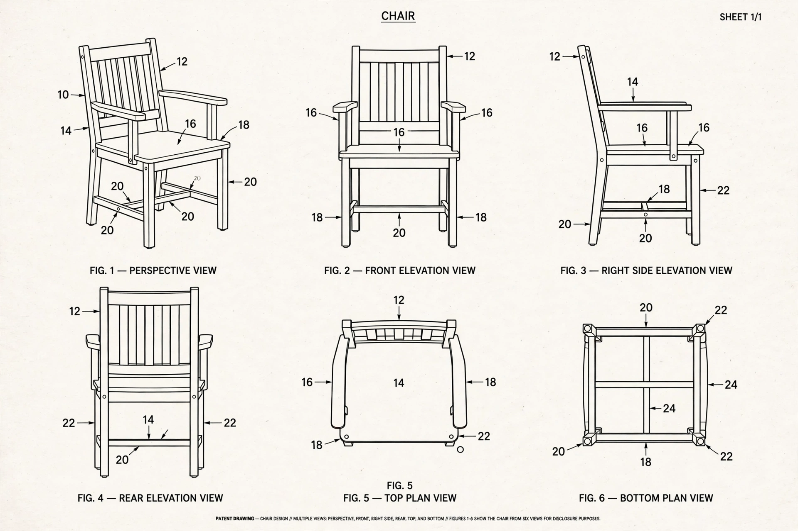

An industrial design right is an intellectual property right that protects the visual design of objects that are not purely utilitarian. A design right covers the appearance of a product — its shape, configuration, pattern or ornamentation — rather than how it works, which is the province of patent law. Depending on the jurisdiction, design rights may arise automatically (unregistered design right) or require registration, and typically last between 10 and 25 years.
To qualify, a design must generally be novel (no identical design previously made available to the public) and possess individual character — producing a different overall impression on an informed user from prior designs. Features dictated solely by technical function are excluded, as are "must-fit" features needed for mechanical connection to another product. Many jurisdictions provide a grace period allowing designers to test-market a design before filing.
In the European Union, a Registered Community Design lasts up to 25 years in five-year increments, while the Unregistered Community Design arises automatically on disclosure and lasts three years, protecting only against copying. The United Kingdom maintains its own registered design system alongside a domestic unregistered design right covering shape and configuration but not surface decoration. In the United States, designs are protected by design patents, granted for new, original and ornamental designs for an article of manufacture and lasting 15 years from grant; famous examples cover products from the Coca-Cola bottle to smartphone interfaces.
The Hague Agreement administered by WIPO allows a single international application to seek design protection in many countries. The Paris Convention provides priority rights for design filings, and TRIPS requires WTO members to protect independently created industrial designs that are new or original, for at least ten years.
Design protection overlaps with copyright (for artistic works applied industrially), moral rights in some systems, and trade dress or passing-off doctrines that protect product get-up. The boundary with utility patents — appearance versus function — is policed by the functionality exclusions, since extending design rights over functional features would block competition in ways the patent system's stricter conditions are meant to prevent.
See also: Design patent, Intellectual property, Invention.